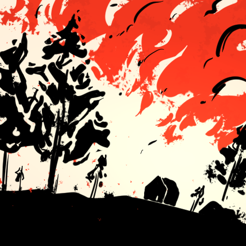
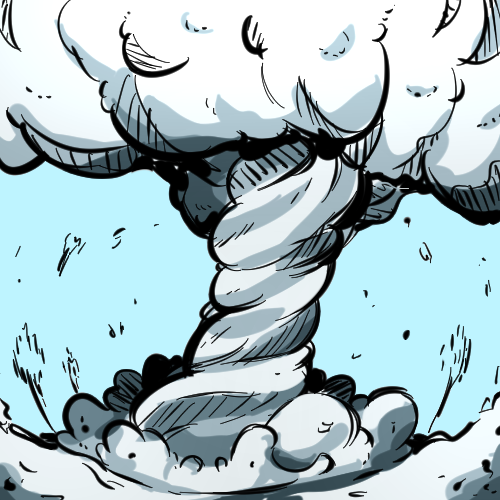

CO₂: 420ppm
Highest in 3 million years.
↓
The year is 2100. My world's climate is very different from yours. But how did we get here?
Scroll down to continue
↓
By 2100, global average temperatures have increased by 3.5°C, triggering unprecedented heatwaves worldwide. Many regions become uninhabitable during summer months.
Coastal cities face chronic flooding as sea levels rise by over 1 meter, displacing millions and submerging entire island nations.
Hurricanes, wildfires, and droughts intensify in frequency and strength, devastating ecosystems and human communities alike.
Many species face extinction as habitats vanish and climate zones shift, reducing biodiversity and disrupting natural balance.
Once ice sheets melt and species vanish, there’s no going back. Climate change has already locked in damage we can’t reverse
Highest in 3 million years.
↓
in recorded history are all after 2015
↓
50% of glaciers lost since 1980.
↓
The Earth was stable. CO₂ was low, glaciers stood tall, and oceans were calm. But the industrial revolution prompted so much fossil fuel burning. The fossil fuels were putting so much carbon into the air, warming the atmosphere.
Carbon in the air started to increase. It didn’t seem like much, but it was the start of something big.
Heatwaves hit stronger. Glaciers began melting. But humans kept moving forward with industrialization, using more coal and oil than ever.
The oceans started warming. Humanity and it's carbon output began heating the Earth at it's fastest rate in 3 million years
Storms got stronger. Rain fell harder. Fires burned hotter. Adverse weather effects were stronger on average than ever in recorded history
The seas had risen. Coral reefs were dying. Heat was breaking records. Yet humans still pump out as much emissions as ever.
Fires, floods, heatwaves were all more common and stronger on average than ever before. The quick change in temperature caused drastic effects to natural disasters that we weren't prepared quickly enough.
The world is now around 1.6°C hotter than it was before we burned fossil fuels. This is the hottest it’s been in over 100,000 years. Ice is melting faster, oceans are rising quicker, and heatwaves are turning deadly. What scientists warned about is now happening, and we’re not slowing down.
We’re deciding what kind of future we want here. Stop the damage now, or face worse storms, deadly heat, and rising seas for generations. This damage is irreversible
Some places will be too hot to live. Food will be harder to grow. Millions may have to leave their homes. Species will go extinct and ecosystems will be lost.
Glaciers are gone. Coral reefs are gone. Summers without Arctic ice.
Heat, floods, and loss will define life on Earth. The landscape is very different from pre-industrial times.
Since 1850(the industrial revolution) carbon emissions have been the main cause of global warming and climate change.

Longer, hotter summers have made wildfires more intense. In California, fires are burning more land than ever before. Drought, heatwaves, and overgrown forests make the perfect conditions. Entire communities are at risk
Warmer oceans give hurricanes more energy. Recent storms like Hurricane Harvey and Ida have dropped record rainfall and caused billions in damage. Places like Louisiana and New York are seeing more flooding from the sheer amount of rain.

Coral reefs are dying as ocean temperatures rise. The Great Barrier Reef has suffered multiple mass bleaching events since 2016. When corals bleach, they lose the tiny organisms that keep them alive, and if the heat lasts too long, they don’t recover.
Some damage from climate change can’t be undone. Carbon stays in the air for hundreds of years, keeping the planet warm even if we stop emissions. Glaciers are melting and won’t come back anytime soon. The oceans hold a lot of heat and will keep warming the planet. Some places, like coral reefs and rainforests, may never recover. This means we can’t undo the past and change the present, but this is exactly why we need to stop it from getting worse.
Individual choices matter, but the biggest impact comes from governments and industries. Real change means holding companies that burn tons of fossil fuels accountable, changing laws, and how we energize the world.
Here are some ways to do so:
Shift away from fossil fuels and invest in solar, wind, and other renewable energy sources.
Create and enforce laws that reduce carbon emissions and encourage green technology.
Build more sustainable infrastructure: energy-efficient homes, better transit, and more green spaces.
Protect forests, oceans, and wetlands. They absorb carbon dioxide and help reduce climate risks.
Support international agreements (Paris Agreement) and work with other countries to cut emissions together.
Make companies reduce emissions, report pollution, and invest in sustainable practices.